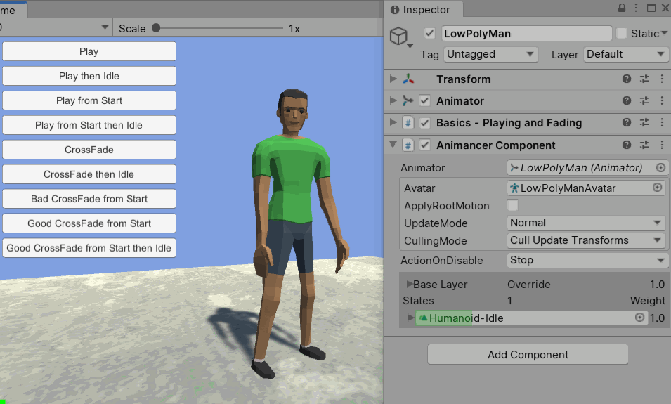
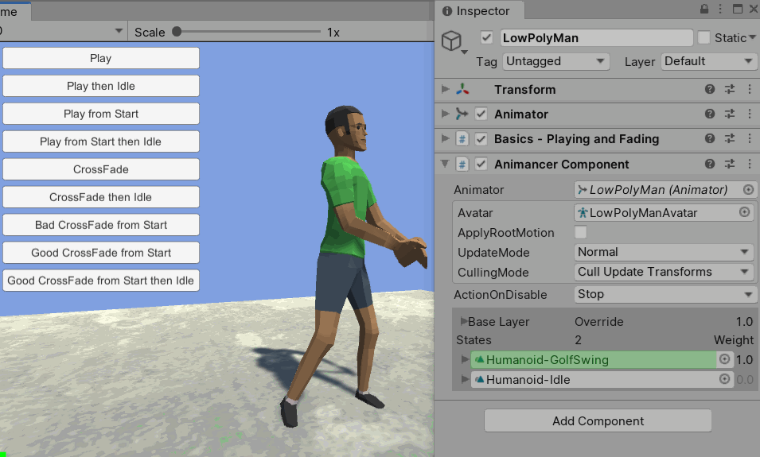
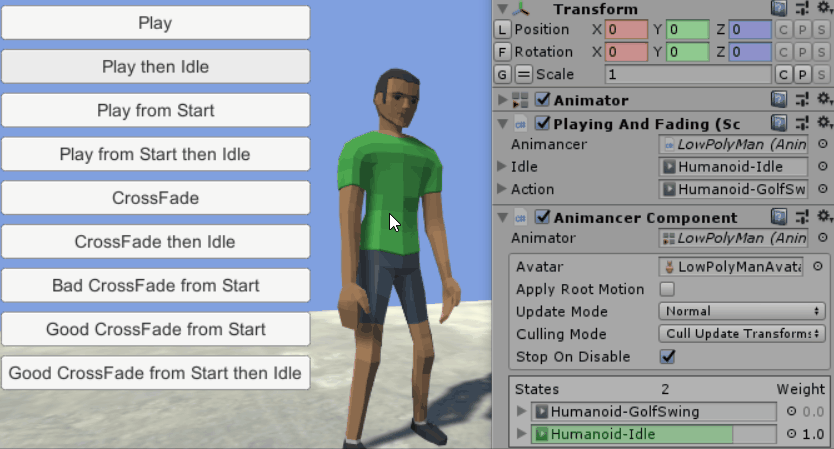
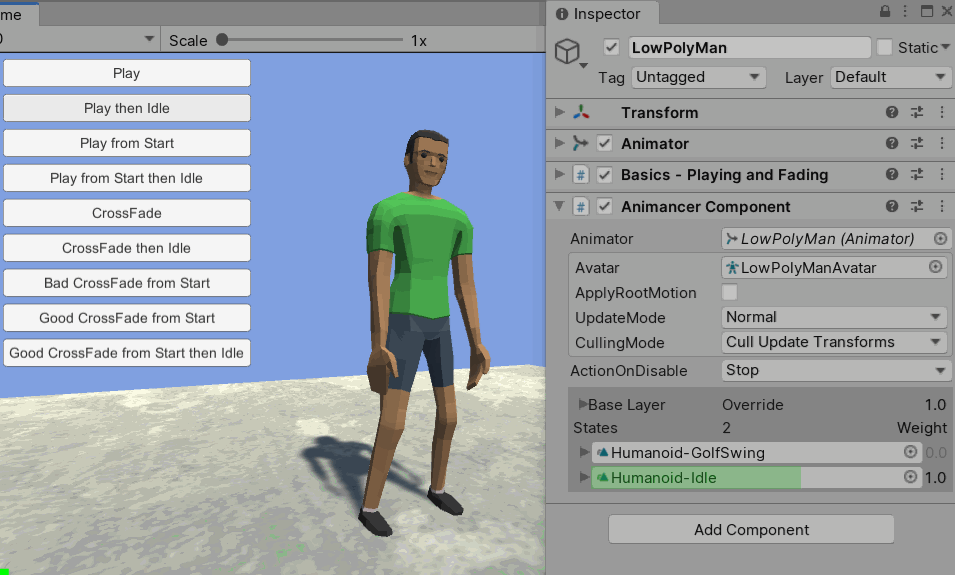
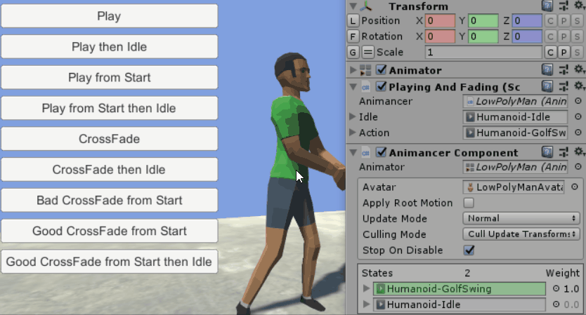
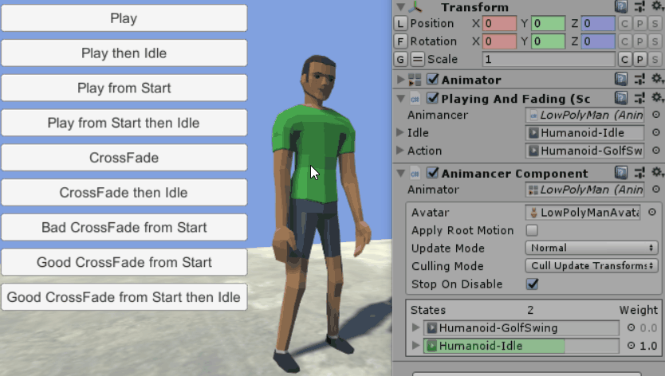

Difficulty: Beginner
Location: Assets/Plugins/Animancer/Examples/01 Basics/02 Playing and Fading
Namespace:
Animancer.Examples.Basics
This example compares the common ways to transition between two animations:
| Idle | Golf Swing |
|---|---|
 |
 |
The Basic Scene Setup is the same as the first example, but this time we are using the PlayingAndFading script instead of PlayAnimationOnClick. The two scripts look quite similar, but instead of an Update method this one has a bunch of public methods which are called by UI Buttons.
Script Setup
The start of the script is practically identical to the PlayAnimationOnClick script from the Quick Play example:
public sealed class PlayingAndFading : MonoBehaviour
{
[SerializeField] private AnimancerComponent _Animancer;
[SerializeField] private AnimationClip _Idle;
[SerializeField] private AnimationClip _Action;
private void OnEnable()
{
_Animancer.Play(_Idle);
}
But instead of using the Humanoid-GolfSwingReady animation as our _Idle, we are using the regular standing Humanoid-Idle to make the differences between it and the _Action much clearer:

Play
First off we simply Play the action animation like so:
public void Play()
{
_Animancer.Play(_Action);
}
This method and all the others in this example are set up to be called by UI Buttons.
Which gives us this when we go into Play Mode:

- The Idle animation is looping (the
Loop Timetoggle is enabled in its import settings), meaning that every time it gets to the end it will just start again. - The GolfSwing animation is not looping, meaning that it will play through once then freeze indefinitely on the last frame.
That method is so simple we could almost just have the UI Button play the animation directly.
The UI Button component uses a UnityEvent field to allow the user to specify what they want the button to do when clicked using the Inspector. Unfortunately, it does not allow methods with a non-void return type and since AnimancerComponent.Play returns the AnimancerState of the animation being played, that means a UnityEvent will not allow that method to be selected.
This limitation and various others can be avoided with a free plugin called UltEvents (also made by Kybernetik like Animancer). Unfortunately, it is not possible to directly change the inbuilt Button component to use an UltEvent instead of a UnityEvent, but it has an UltEventHolder component which you could add to a Button. Have the Button call the UltEventHolders Invoke method and configure the event you want in the UltEventHolder instead. It also means that you can use UltEvents in your own scripts any time you would normally use a UnityEvent to make use of the superior features and improved Inspector interface.
Play then Idle
Most of the time you do not want a character to just freeze once they finish an animation, you want them so start doing something else. In this simple example that means we want them to just return to the Idle animation using the End Event, so our next method looks like this:
public void PlayThenIdle()
{
_Animancer.Play(_Action).Events.OnEnd = () => _Animancer.Play(_Idle);
}
Here we are using a Lambda Expression to declare the callback method inside the current method. In this case we could have assigned OnEnable to the event since it does the same thing (_Animancer.Play(_Action).Events.OnEnd = OnEnable;) but that is not always so convenient and "OnEnable" is not really an appropriate name for what it does (which does not matter in a simple example like this, but effective naming is very important in more complex projects).

That might not be what you expected because the Play method does not automatically restart the animation. The GolfSwing was already playing from before, so the Play call did basically nothing and then we registered an OnEnd callback which got triggered the very next frame because the animation was already past its end. The next section (Play from Start) explains why it works like this, so let's ignore it for now.
Clicking the button again after that plays it and returns to idle as expected and clicking it repeatedly doesn't interrupt the animation if it is already playing.
Note that all events are Automatically Cleared whenever a new animation is played. This ensures that the above Play method will not have to worry about any of these other methods that might have set their own events.
Play from Start
Often when triggering an animation you will want to ensure that it starts from the beginning, even if it was already playing. To do that, you can set the AnimancerState.Time to 0:
public void PlayFromStart()
{
_Animancer.Play(_Action).Time = 0;
}

This time, even if we click the button in the middle of the animation it will always snap back to the start and play from there.
The default behaviour means we can lazily call Play to ensure that a particular animation is playing rather than needing to manually check that it isn't already playing before we call Play.
Play from Start then Idle
For the sake of completeness, this method combines the previous two so that the animation always starts from the beginning and returns to Idle at the end:
public void PlayFromStartThenIdle()
{
var state = _Animancer.Play(_Action);
state.Time = 0;
state.Events.OnEnd = () => _Animancer.Play(_Idle);
}

CrossFade
Instead of immediately snapping the character's pose to the new animation, it is often desirable to transition towards it over time to give the impression of smooth motion. This is called "Cross Fading", which can be done by simply any of the Play methods that have a "fadeDuration" parameter to specify how long you want the transition to take:
public void CrossFade()
{
_Animancer.Play(_Action, 0.25f);
}
The optional FadeMode parameter determines whether the specified fadeDuration is measured in seconds or as a portion of the animation's length. The default is seconds.

Note how the Weights on the right of the Inspector change over time instead of snapping to their target value instantly. If you want to see it in slow motion, you can put a TimeScale component on any object in the scene to easily control the game's overall speed.
It is often better to use Transitions so that you can edit the animation details in the Inspector and preview what it will look like instead of hard-coding everything in your scripts. However, the purpose of this example is to explain how things work internally so they will not be used here.
CrossFade then Idle
Same as with Play then Idle, we want to go back to Idle once the GolfSwing ends, but this time we can do it smoothly:
public void CrossFadeThenIdle()
{
_Animancer.Play(_Action, 0.25f).Events.OnEnd = () => _Animancer.Play(_Idle, 0.25f);
// That line is quite long so you might want to split it.
// Note how the first line does not have a semicolon at the end.
// _Animancer.Play(_Action, 0.25f)
// .Events.OnEnd = () => _Animancer.Play(_Idle, 0.25f);
}
Just like with Play then Idle, if we do this when the character is already at the end of the animation he goes straight back to Idle, though this time it does it smoothly.

Bad CrossFade from Start
Since ...Play(_Action).Time = 0; allows you to ensure that the animation plays from the start, you might try to do the same thing when fading:
public void BadCrossFadeFromStart()
{
_Animancer.Play(_Action, 0.25f).Time = 0;
}

This works fine when transitioning from another animation (Idle to GolfSwing is smooth), but instantly snapping the Time back to the start prevents it from executing a smooth transition back to the start of the same animation because an AnimancerState only has one Time value. It can either be at its previous value or at the beginning, but not both and trying to interpolate between the two would mean it plays backwards for a moment which isn't very useful either.
Good CrossFade from Start
Fortunately, the optional FadeMode parameter allows you to indicate that you want the fade to come from the start of the animation:
public void GoodCrossFadeFromStart()
{
_Animancer.Play(_Action, 0.25f, FadeMode.FromStart);
}

When FadeMode.FromStart tries to fade into an animation that is already playing it creates a second AnimancerState to play the same AnimationClip so that the original can continue playing as it fades out while the new one fades in from the start. In this case it still looks rather silly because it doesn't make sense to interrupt a golf swing like that, but the point is that it transitions smoothly instead of snapping back to the start instantly.
If you click the button rapidly it will continue creating new states until it has 5, then it will throw an ArgumentOutOfRangeException. This is an intentional safety measure since it is unlikely that you would actually want that many copies of an animation playing at once so it is a likely indication of a bug in your code (and it certainly looks silly in this example). However, if you really do want to have many copies for whatever reason, you can simply set AnimancerLayer.maxStateDepth to a higher value beforehand.
Good CrossFade from Start then Idle
Again for the sake of completeness, let's combine the two:
public void GoodCrossFadeFromStartThenIdle()
{
_Animancer.Play(_Action, 0.25f, FadeMode.FromStart)
.Events.OnEnd = () => _Animancer.Play(_Idle, 0.25f);
}

Note how we are not specifying a FadeMode for the return transition to Idle since we do not actually care what Time that animation is at and it's unlikely that we would try to transition back to idle repeatedly anyway.